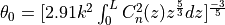
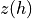
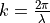
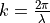
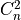
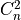
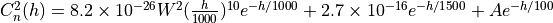

Turbulence Model¶
Overview¶
Accounting for atmospheric turbulence in infrared and optical wavelengths is important to AFSIM laser propagation because it produces an average beam spreading effect, independent of other considerations like diffraction and wavefront error, that reduces the average beam power impacting a high-energy-laser target or laser communications receiver.
Turbulence Model Equations¶
AFSIM implements the isoplantic relation for turbulent beam spread angle:

where  is a function relating altitude,  , to the distance along the path from receiver to transmitter, with length .  is the wave number for characteristic laser wavelength
, to the distance along the path from receiver to transmitter, with length .  is the wave number for characteristic laser wavelength  , and  is the atmospheric structure parameter, having units of
, and  is the atmospheric structure parameter, having units of  .
.
Note
When evaluating this integral it is understood that actual expressions are typically functions of , not  .
.
Models¶
There are various documented models. Currently implemented in AFSIM is the Hufnagel-Valley (5/7) (“hv57”) atmospheric structure function, which takes the form:

where is the height above the surface where the function is computed (meters), and .
Reference¶
“The Effect of Atmospheric Optical Turbulence on Laser Communication Systems: Part 1, Theory” Thomas C Farrell, Air Force Research Laboratory, Space Vehicles Directorate 3550 Aberdeen Ave., SE, Kirtland AFB, NM 87117-5776; Unpublished